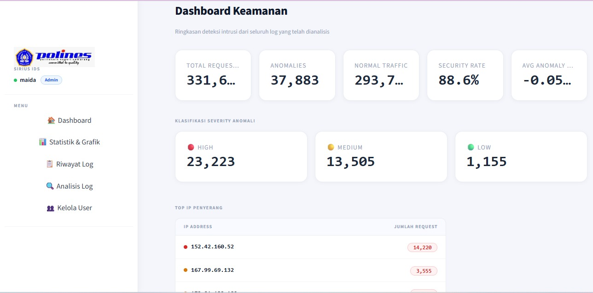
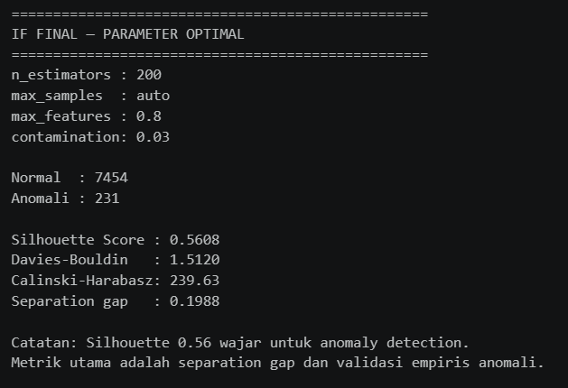
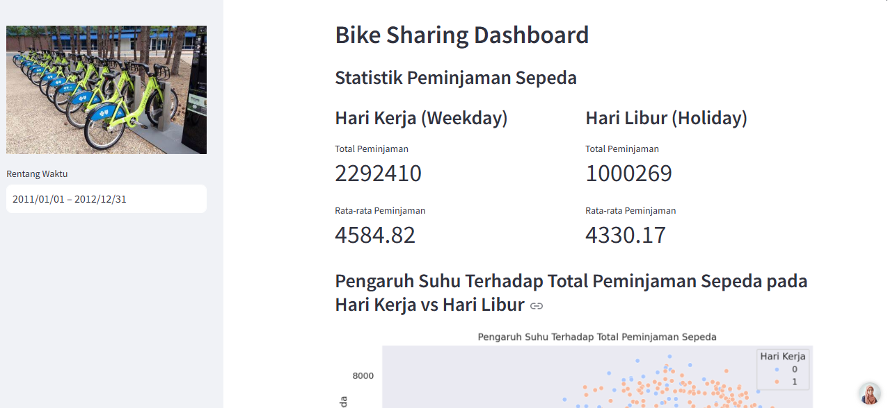
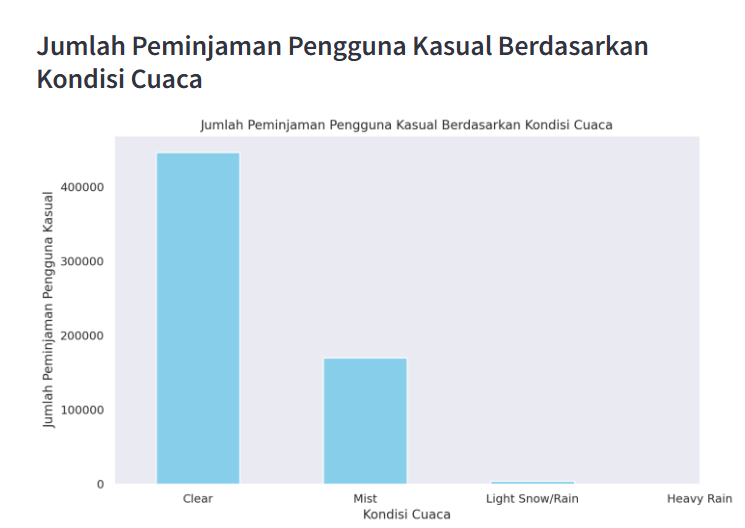
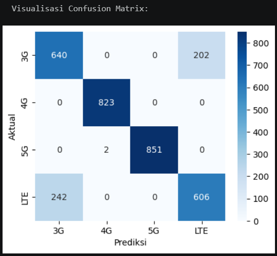
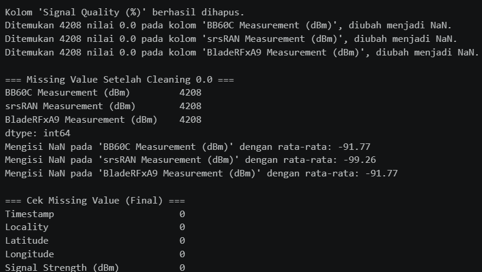

Data & AI enthusiast with hands-on experience in end-to-end data pipelines, machine learning, and building tools that turn messy real-world data into actionable output.
I am a D4 Telecommunications Engineering student at Politeknik Negeri Semarang, focused on data and artificial intelligence. My interest lies at the intersection of raw data engineering and applied machine learning to solve real-world problems.
My approach always starts from data — understanding its structure, quality, and context before building any model. I believe that clean pipelines produce trustworthy models.
My final project, SIRIUS, processes real, messy university server logs — a mix of Cloudflare reverse proxy traffic and public IPs — into a fully functional ML-based intrusion detection system.
SIRIUS is an end-to-end intrusion detection system built on real Nginx logs from Politeknik Negeri Semarang's web server. The core challenge: raw data in Combined Log Format mixed with Cloudflare reverse proxy traffic — meaning the visible IPs are not the actual attacker IPs.
The pipeline begins with parsing 30,105 log lines via regex (9 lines failed), followed by IP classification into three categories: 19,731 Cloudflare, 7,685 genuine public, and 2,689 private. Only genuine public IPs are processed further.
From this data, 20 features were engineered to represent access patterns, status code distributions, and request anomalies. Isolation Forest (n_estimators=200, contamination=0.03) detects anomalies, then Random Forest classifies severity into High, Medium, or Low.
All results are stored in PostgreSQL and visualized through a web dashboard with user management, log history, and real-time statistical analysis.

Security Dashboard
Isolation Forest EvaluationExploratory data analysis on the bike-sharing dataset from the UCI Machine Learning Repository, covering 731 daily records and 17,379 hourly records from 2011–2012. Data wrangling included date column type conversion, missing value checks, and duplicate detection.
Three business questions were answered quantitatively: (1) temperature's influence on total rentals on workdays vs. holidays, (2) weather condition impact on casual users — clear weather yields 2.6× more rentals than misty, dropping to near zero in heavy rain, and (3) peak hour patterns between registered and casual users.
A Streamlit dashboard was built with interactive filters for time range, weather condition, and day type — displaying aggregated statistics and dynamic visualizations.

Streamlit Dashboard
Weather vs Casual RentalsCellular signal quality analysis using data from 3 measurement devices: BB60C, srsRAN, and BladeRFxA9. The core challenge: each device produced 4,208 values of 0.0 — not valid zero signals, but device measurement failures. These were identified, categorized as NaN, and imputed with per-column means (BB60C: −91.77 dBm, srsRAN: −99.26 dBm, BladeRFxA9: −91.77 dBm).
After cleaning and StandardScaler normalization, DBSCAN was used to cluster data by signal proximity without labels. KNN was then trained to classify network types (3G, 4G, 5G, LTE) — the dataset was split 80:20 (13,463 train / 3,366 test).
Results show 4G and 5G predicted perfectly (F1=1.00), while 3G and LTE have overlapping signal characteristics resulting in F1 ~0.73–0.74.

Confusion Matrix — KNN
Zero-value Detection & ImputationFeel free to reach out for data & AI project collaborations, or just a chat about machine learning.